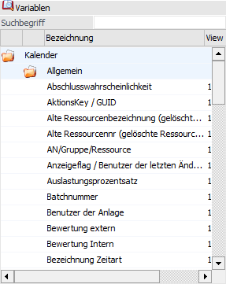

Kalender

Wenn eine Liste mit dem Typ "27 - Zeitauswertung" erstellt wird, steht u.a. der Variablenbereich "Kalender" zur Verfügung. Nachdem der Datenbereich "Kalender" im Programm in unterschiedlichen Bereichen verwendet wird, ist die Beschreibung der Felder nicht immer schlüssig. Nachfolgend werden die wichtigsten Felder, die für eine Zeitauswertung Anwendung finden können, beschrieben:
Ø Datum / Prüfdatum
Prüfdatum - wann wurde die Zeiterfassungszeile geprüft
Ø Datum Von / Datum Bis
Datum und Uhrzeit von - bis der Zeiterfassungszeile
Ø Dauer / Einheit
Zeiteinheit in Tagen / Stunden / Minuten, abhängig von der verwendeten Zeitart
Ø Bezeichnung Zeitart
Bezeichnung der Zeitart
Ø Einplanungsreihenfolge / Typ der Zeitart
Typ der Zeitart (0 und 1 sind Fehlzeiten (gesetzlich geregelt oder intern), 2 = Sollzeit, 3 = Istzeit und 10 = Pause).
Ø Flag Dispo/Fix / Typ der gesetzl. Fehlzeit
Wenn es sich um eine gesetzlich geregelte Fehlzeit handelt, wird hier der Typ der Fehlzeit ausgewiesen.
Ø ProdJournalkey / Notiz
Notiz aus der Zeiterfassungszeile
Ø Ebene / AS bei IST-Zeiten / Typ
Typ (0 = AN, -1 = AN-Gruppe, 2 = Ressource)
Ø Tätigkeit / Key der Zeitart
Zeitart
Ø Wochentag / Benutzer der Prüfung
Wenn es sich um eine geprüfte Zeiterfassungszeile handelt, wird hier der Benutzer (Benutzernummer), der die Prüfung vorgenommen hat, angezeigt.